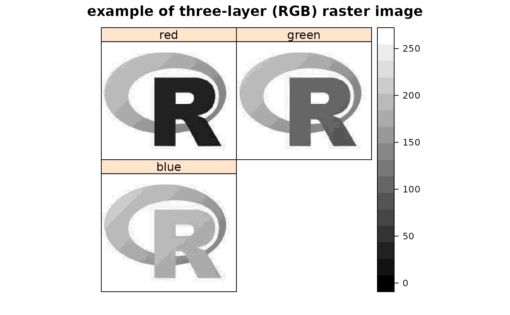
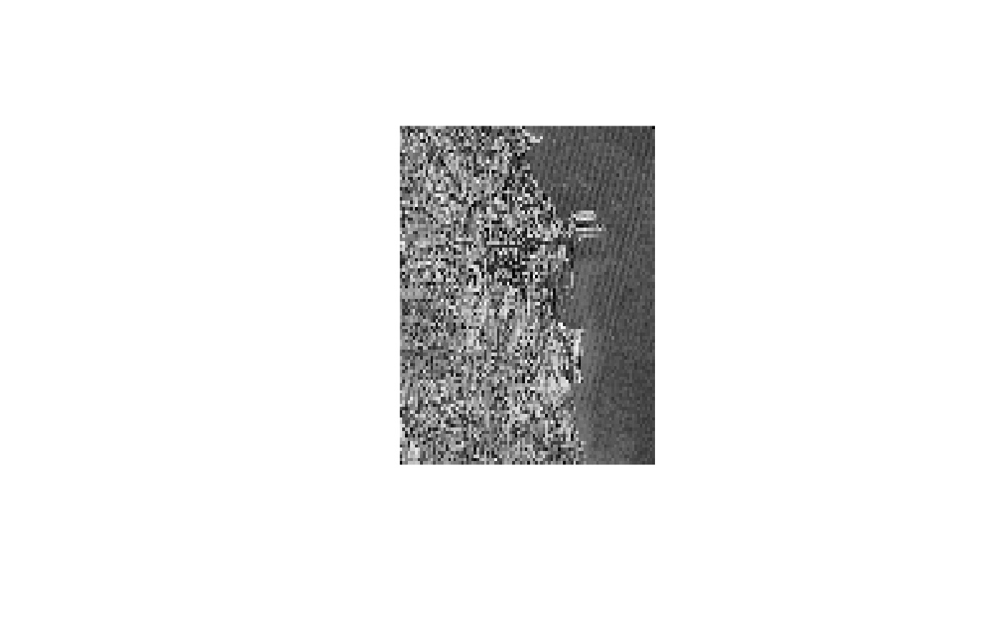
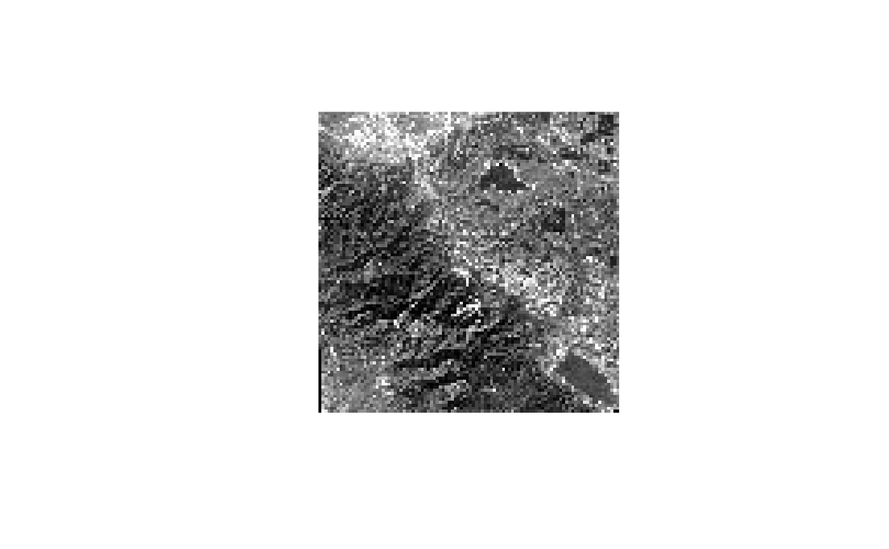
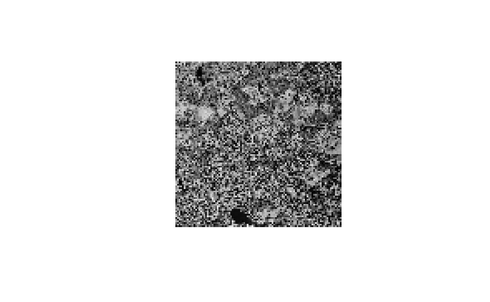
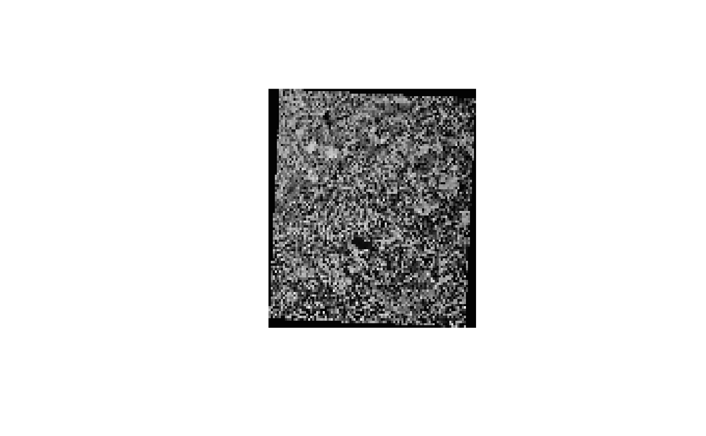
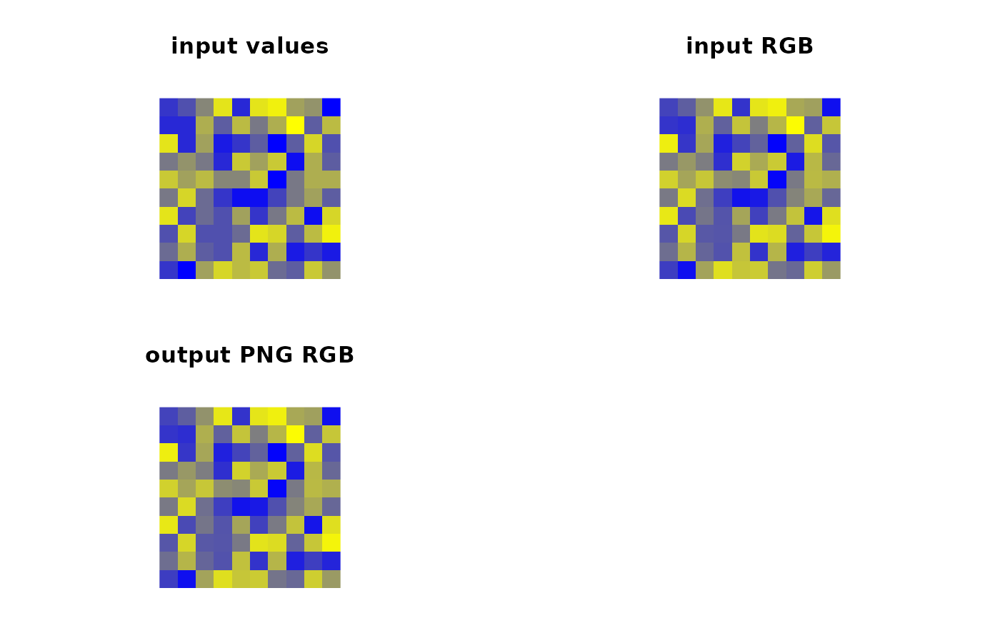
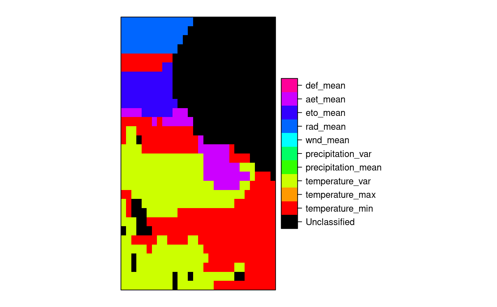
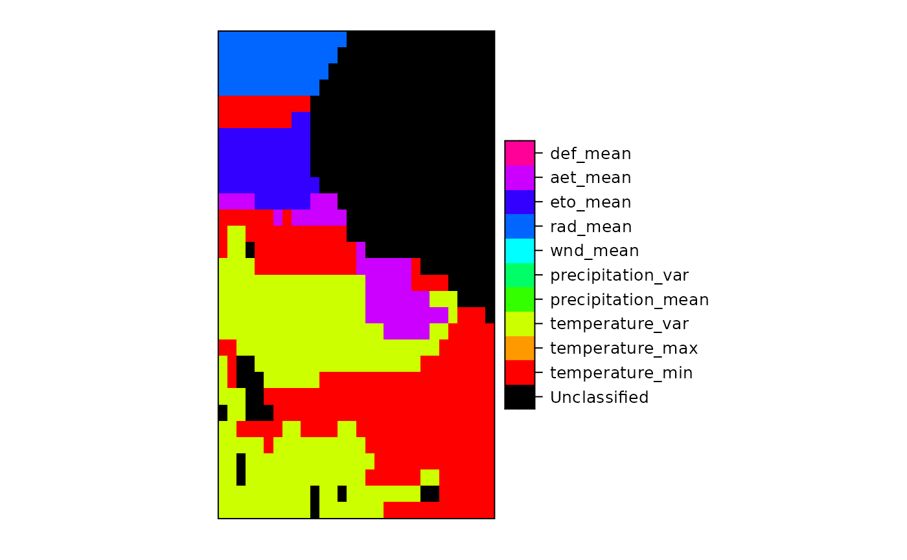

Read/write between GDAL grid maps and Spatial objects
readGDAL.RdThe functions read or write GDAL grid maps. They will set
the spatial reference system if available. GDALinfo reports the
size and other parameters of the dataset. create2GDAL creates
a GDAL data set from a SpatialGridDataFrame object, in particular to
be able to save to GDAL driver formats that only permit copying rather
than creation.
readGDAL(fname, offset, region.dim, output.dim, band, p4s=NULL, ..., half.cell=c(0.5, 0.5), silent = FALSE, OVERRIDE_PROJ_DATUM_WITH_TOWGS84=NULL, allowedDrivers = NULL, enforce_xy = NULL, options=NULL) asSGDF_GROD(x, offset, region.dim, output.dim, p4s=NULL, ..., half.cell=c(0.5,0.5), OVERRIDE_PROJ_DATUM_WITH_TOWGS84=NULL, enforce_xy = NULL) writeGDAL(dataset, fname, drivername = "GTiff", type = "Float32", mvFlag = NA, options=NULL, copy_drivername = "GTiff", setStatistics=FALSE, colorTables = NULL, catNames=NULL, enforce_xy = NULL) create2GDAL(dataset, drivername = "GTiff", type = "Float32", mvFlag = NA, options=NULL, fname = NULL, setStatistics=FALSE, colorTables = NULL, catNames=NULL, enforce_xy = NULL) GDALinfo(fname, silent=FALSE, returnRAT=FALSE, returnCategoryNames=FALSE, returnStats=TRUE, returnColorTable=FALSE, OVERRIDE_PROJ_DATUM_WITH_TOWGS84=NULL, returnScaleOffset=TRUE, allowedDrivers = NULL, enforce_xy = NULL, options=NULL) GDALSpatialRef(fname, silent=FALSE, OVERRIDE_PROJ_DATUM_WITH_TOWGS84=NULL, allowedDrivers = NULL, enforce_xy = NULL, options=NULL)
Arguments
| fname | file name of grid map; in |
|---|---|
| x | A GDALReadOnlyDataset object |
| offset | Number of rows and columns from the origin (usually the upper left corner) to begin reading from; presently ordered (y,x) - this may change |
| region.dim | The number of rows and columns to read from the dataset; presently ordered (y,x) - this may change |
| output.dim | The number of rows and columns to return in the created object using GDAL's method to take care of image decimation / replication; presently ordered (y,x) - this may change |
| band | if missing, all bands are read |
| p4s | PROJ4 string defining CRS, if default (NULL), the value is read from the GDAL data set |
| half.cell | Used to adjust the intra-cell offset from corner to centre, usually as default, but may be set to c=(0,0) if needed; presently ordered (y,x) - this may change |
| silent | logical; if TRUE, comment and non-fatal CPL driver errors suppressed |
| OVERRIDE_PROJ_DATUM_WITH_TOWGS84 | logical value, default NULL, which case the cached option set by |
| allowedDrivers | a character vector of suggested driver short names may be provided starting from GDAL 2.0 |
| ... | arguments passed to either |
| dataset | object of class SpatialGridDataFrame-class or SpatialPixelsDataFrame-class |
| drivername, copy_drivername | GDAL driver name; if the chosen driver
does not support dataset creation, an attempt is made to use the
|
| type | GDAL write data type, one of: ‘Byte’, ‘Int16’, ‘Int32’, ‘Float32’, ‘Float64’; ‘UInt16’, ‘UInt32’ are available but have not been tests |
| mvFlag | default NA, missing value flag for output file; the default value works for ‘Int32’, ‘Float32’, ‘Float64’, but suitable in-range value that fits the data type should be used for other data types, for example 255 for ‘Byte’, -32768 for ‘Int16’, and so on; see Details below. |
| enforce_xy | (PROJ6+/GDAL3+) either use global setting (default NULL) or override policy for coordinate ordering easting/x as first axis, northing/y as second axis. |
| options | driver-specific options to be passed to the GDAL driver; only available for opening datasets from GDAL 2.0; see copying and creation details below |
| setStatistics | default FALSE, if TRUE, attempt to set per-band statistics in the output file (driver-dependent) |
| colorTables | default NULL, if not NULL, a list of length equal to the number of bands, with NULL components for bands with no color table, or either an integer matrix of red, green, blue and alpha values (0-255), or a character vector of colours. The number of colours permitted may vary with driver. |
| catNames | default NULL, if not NULL, a list of length equal to the number of bands, with NULL components for bands with no category names, or a string vector of category names |
| returnRAT | default FALSE, if TRUE, return a list with a Raster Attribute Table or NULL for each band |
| returnCategoryNames | default FALSE, if TRUE, return a list with a character vector of CategoryNames or NULL for each band |
| returnStats | default TRUE, return band-wise statistics if avaliable (from 0.7-20 set to NA if not available) |
| returnColorTable | default FALSE; if TRUE return band-wise colour tables in a list attribute “ColorTables” |
| returnScaleOffset | default TRUE, return a matrix of bandwise scales and offsets |
Details
In writeGDAL, if types other than ‘Int32’,
‘Float32’, ‘Float64’ are used, the “mvFlag”
argument should be used to set a no data value other than the default
NA. Note that the flag only replaces NA values in the data being exported
with the value of the argument - it does not mark data values equal to
“mvFlag” as missing. The value is stored in the file being written
in driver-specific ways, and may be used when the file is read. When the
default “mvFlag=NA” is used, no NoDataValue is written to the file,
and the input data is written as is.
Also in writeGDAL, the “options” argument may be
used to pass a character vector of one or more options to the
driver, for example ‘options=“INTERLEAVE=PIXEL”’,
or ‘options=c(“INTERLEAVE=PIXEL”,
“COMPRESS=DEFLATE”)’. Typical cases are given in the examples
below; it may also be necessary in some cases to escape quotation markes
if included in the string passed to the driver.
Value
read.GDAL returns the data in the file as a Spatial object.
Usually, GDAL maps will be north-south oriented, in which case the rgdal
function getRasterData is used to read the data, and an object
of class SpatialGridDataFrame-class is returned.
Some map formats supported by GDAL are not north-south oriented grids. If
this is the case, readGDAL returns the data as a set of point
data, being of class SpatialPointsDataFrame-class. If the points
are on a 45 or 90 degree rotated grid, you can try to enforce gridding
later on by e.g. using gridded-methods(x)=TRUE.
Note
Non-fatal CPL errors may be displayed for some drivers, currently for the AIG ArcInfo 9.3 binary raster driver using GDAL >= 1.6.2; the data has been read correctly, but the contents of the info directory did not meet the specifications used to reverse engineer the driver used in GDAL (see http://trac.osgeo.org/gdal/ticket/3031)
Warning
Some raster files may have an erroneous positive
y-axis resolution step, leading to the data being flipped on the
y-axis. readGDAL will issue a warning: Y axis resolution
positive, examine data for flipping, when the step is positive, but
this need not mean that the data are flipped. Examine a display of the
data compared with your knowledge of the file to determine whether this
is the case (one known case is interpolation files created under Qgis
up to February 2010 at least). To retreive the correct orientation,
use flipVertical.
See also
image, asciigrid
Examples
set_thin_PROJ6_warnings(TRUE) library(grid) GDALinfo(system.file("external/test.ag", package="sp")[1])#> Warning: statistics not supported by this driver#> rows 115 #> columns 80 #> bands 1 #> lower left origin.x 178400 #> lower left origin.y 329400 #> res.x 40 #> res.y 40 #> ysign -1 #> oblique.x 0 #> oblique.y 0 #> driver AAIGrid #> projection NA #> file /home/rsb/lib/r_libs/sp/external/test.ag #> apparent band summary: #> GDType hasNoDataValue NoDataValue blockSize1 blockSize2 #> 1 Float32 TRUE 1e+31 1 80 #> apparent band statistics: #> Bmin Bmax Bmean Bsd #> 1 -4294967295 4294967295 NA NA#> /home/rsb/lib/r_libs/sp/external/test.ag has GDAL driver AAIGrid #> and has 115 rows and 80 columnsclass(x)#> [1] "SpatialGridDataFrame" #> attr(,"package") #> [1] "sp"image(x)summary(x)#> Object of class SpatialGridDataFrame #> Coordinates: #> min max #> x 178400 181600 #> y 329400 334000 #> Is projected: NA #> proj4string : [NA] #> Grid attributes: #> cellcentre.offset cellsize cells.dim #> x 178420 40 80 #> y 329420 40 115 #> Data attributes: #> band1 #> Min. : 128.4 #> 1st Qu.: 293.2 #> Median : 371.4 #> Mean : 423.2 #> 3rd Qu.: 499.8 #> Max. :1805.8 #> NA's :6097#> Object of class SpatialGridDataFrame #> Coordinates: #> min max #> x 178400 181600 #> y 329400 334000 #> Is projected: NA #> proj4string : [NA] #> Grid attributes: #> cellcentre.offset cellsize cells.dim #> x 178420 40 80 #> y 329420 40 115 #> Data attributes: #> band1 #> Min. : 128.4 #> 1st Qu.: 293.2 #> Median : 371.4 #> Mean : 423.2 #> 3rd Qu.: 499.8 #> Max. :1805.8 #> NA's :6097image(x)#> /home/rsb/lib/r_libs/sp/external/simple.ag has GDAL driver AAIGrid #> and has 4 rows and 3 columnsclass(x)#> [1] "SpatialGridDataFrame" #> attr(,"package") #> [1] "sp"image(x)summary(x)#> Object of class SpatialGridDataFrame #> Coordinates: #> min max #> x 0 3 #> y 0 4 #> Is projected: NA #> proj4string : [NA] #> Grid attributes: #> cellcentre.offset cellsize cells.dim #> x 0.5 1 3 #> y 0.5 1 4 #> Data attributes: #> band1 #> Min. : 0.10 #> 1st Qu.: 3.25 #> Median : 5.50 #> Mean : 5.41 #> 3rd Qu.: 7.75 #> Max. :10.00 #> NA's :2#> /tmp/Rtmp69B5vH/temp_libpath5ff54d7ef427/rgdal/pictures/big_int_arc_file.asc has GDAL driver AAIGrid #> and has 7 rows and 7 columnssummary(x)#> Object of class SpatialGridDataFrame #> Coordinates: #> min max #> x 592000 599000 #> y 4919000 4926000 #> Is projected: NA #> proj4string : [NA] #> Grid attributes: #> cellcentre.offset cellsize cells.dim #> x 592500 1000 7 #> y 4919500 1000 7 #> Data attributes: #> band1 #> Min. :10000 #> 1st Qu.:32420 #> Median :50693 #> Mean :48366 #> 3rd Qu.:64877 #> Max. :77594cat("if the range is not 10000, 77590, your GDAL does not detect big\n")#> if the range is not 10000, 77590, your GDAL does not detect bigcat("integers for this driver\n")#> integers for this driver#> /tmp/Rtmp69B5vH/temp_libpath5ff54d7ef427/rgdal/pictures/Rlogo.jpg has GDAL driver JPEG #> and has 175 rows and 200 columns#> Warning: GeoTransform values not availablesummary(y)#> Object of class SpatialGridDataFrame #> Coordinates: #> min max #> x 0 200 #> y 0 175 #> Is projected: NA #> proj4string : [NA] #> Grid attributes: #> cellcentre.offset cellsize cells.dim #> x 0.5 1 200 #> y 0.5 1 175 #> Data attributes: #> band1 #> Min. : 8.0 #> 1st Qu.:162.0 #> Median :255.0 #> Mean :192.4 #> 3rd Qu.:255.0 #> Max. :255.0#> /tmp/Rtmp69B5vH/temp_libpath5ff54d7ef427/rgdal/pictures/Rlogo.jpg has GDAL driver JPEG #> and has 175 rows and 200 columns#> Warning: GeoTransform values not availablesummary(y)#> Object of class SpatialGridDataFrame #> Coordinates: #> min max #> x 0 200 #> y 0 175 #> Is projected: NA #> proj4string : [NA] #> Grid attributes: #> cellcentre.offset cellsize cells.dim #> x 0.5 1 200 #> y 0.5 1 175 #> Data attributes: #> band1 band2 band3 #> Min. : 8.0 Min. : 75.0 Min. :127.0 #> 1st Qu.:162.0 1st Qu.:163.0 1st Qu.:188.0 #> Median :255.0 Median :255.0 Median :255.0 #> Mean :192.4 Mean :206.7 Mean :224.6 #> 3rd Qu.:255.0 3rd Qu.:255.0 3rd Qu.:255.0 #> Max. :255.0 Max. :255.0 Max. :255.0spplot(y, names.attr=c("red","green","blue"), col.regions=grey(0:100/100), main="example of three-layer (RGB) raster image", as.table=TRUE)#> Warning: PROJ6/GDAL3 PROJ string degradation in workflow #> repeated warnings suppressed #> Discarded datum Amersfoort in CRS definition#> Warning: Discarded datum Unknown_based_on_Bessel_1841_ellipsoid in CRS definition: +proj=sterea +lat_0=52.1561605555556 +lon_0=5.38763888888889 +k=0.9999079 +x_0=155000 +y_0=463000 +ellps=bessel +units=m +no_defs#> Warning: statistics not supported by this driver#> rows 104 #> columns 78 #> bands 1 #> lower left origin.x 178440 #> lower left origin.y 329600 #> res.x 40 #> res.y 40 #> ysign -1 #> oblique.x 0 #> oblique.y 0 #> driver GTiff #> projection +proj=sterea +lat_0=52.1561605555556 +lon_0=5.38763888888889 #> +k=0.9999079 +x_0=155000 +y_0=463000 +ellps=bessel +units=m +no_defs #> file /tmp/RtmpiD1diW/file62316cf23b83 #> apparent band summary: #> GDType hasNoDataValue NoDataValue blockSize1 blockSize2 #> 1 Float32 FALSE 0 26 78 #> apparent band statistics: #> Bmin Bmax Bmean Bsd #> 1 -4294967295 4294967295 NA NA #> Metadata: #> AREA_OR_POINT=AreawriteGDAL(meuse.grid["dist"], fn, setStatistics=TRUE) GDALinfo(fn)#> Warning: Discarded datum Unknown_based_on_Bessel_1841_ellipsoid in CRS definition: +proj=sterea +lat_0=52.1561605555556 +lon_0=5.38763888888889 +k=0.9999079 +x_0=155000 +y_0=463000 +ellps=bessel +units=m +no_defs#> rows 104 #> columns 78 #> bands 1 #> lower left origin.x 178440 #> lower left origin.y 329600 #> res.x 40 #> res.y 40 #> ysign -1 #> oblique.x 0 #> oblique.y 0 #> driver GTiff #> projection +proj=sterea +lat_0=52.1561605555556 +lon_0=5.38763888888889 #> +k=0.9999079 +x_0=155000 +y_0=463000 +ellps=bessel +units=m +no_defs #> file /tmp/RtmpiD1diW/file62316cf23b83 #> apparent band summary: #> GDType hasNoDataValue NoDataValue blockSize1 blockSize2 #> 1 Float32 FALSE 0 26 78 #> apparent band statistics: #> Bmin Bmax Bmean Bsd #> 1 0 0.992607 0.2971195 0.218151 #> Metadata: #> AREA_OR_POINT=Areamg2 <- readGDAL(fn)#> /tmp/RtmpiD1diW/file62316cf23b83 has GDAL driver GTiff #> and has 104 rows and 78 columns#> Warning: Discarded datum Unknown_based_on_Bessel_1841_ellipsoid in CRS definition: +proj=sterea +lat_0=52.1561605555556 +lon_0=5.38763888888889 +k=0.9999079 +x_0=155000 +y_0=463000 +ellps=bessel +units=m +no_defsproj4string(mg2)#> [1] "+proj=sterea +lat_0=52.1561605555556 +lon_0=5.38763888888889 +k=0.9999079 +x_0=155000 +y_0=463000 +ellps=bessel +units=m +no_defs"SP27GTIF <- readGDAL(system.file("pictures/SP27GTIF.TIF", package = "rgdal")[1], output.dim=c(100,100))#> /tmp/Rtmp69B5vH/temp_libpath5ff54d7ef427/rgdal/pictures/SP27GTIF.TIF has GDAL driver GTiff #> and has 929 rows and 699 columns#> Warning: Discarded datum North_American_Datum_1927 in CRS definition: +proj=tmerc +lat_0=36.6666666666667 +lon_0=-88.3333333333333 +k=0.999975 +x_0=152400.30480061 +y_0=0 +ellps=clrk66 +towgs84=-8,160,176,0,0,0,0 +units=us-ft +no_defs, #> but +towgs84= values preservedsummary(SP27GTIF)#> Object of class SpatialGridDataFrame #> Coordinates: #> min max #> x 681480 704407.2 #> y 1882579 1913050.0 #> Is projected: TRUE #> proj4string : #> [+proj=tmerc +lat_0=36.6666666666667 +lon_0=-88.3333333333333 #> +k=0.999975 +x_0=152400.30480061 +y_0=0 +ellps=clrk66 #> +towgs84=-8,160,176,0,0,0,0 +units=us-ft +no_defs] #> Grid attributes: #> cellcentre.offset cellsize cells.dim #> x 681594.6 229.272 100 #> y 1882731.2 304.712 100 #> Data attributes: #> band1 #> Min. : 4.0 #> 1st Qu.: 78.0 #> Median :104.0 #> Mean :114.1 #> 3rd Qu.:148.0 #> Max. :255.0slot(SP27GTIF, "proj4string")#> CRS arguments: #> +proj=tmerc +lat_0=36.6666666666667 +lon_0=-88.3333333333333 #> +k=0.999975 +x_0=152400.30480061 +y_0=0 +ellps=clrk66 #> +towgs84=-8,160,176,0,0,0,0 +units=us-ft +no_defs#> [1] "BOUNDCRS[SOURCECRS[PROJCRS[\"NAD27 / Illinois East\",BASEGEOGCRS[\"NAD27\",DATUM[\"North American Datum 1927\",ELLIPSOID[\"Clarke 1866\",6378206.4,294.978698213898,LENGTHUNIT[\"metre\",1]]],PRIMEM[\"Greenwich\",0,ANGLEUNIT[\"degree\",0.0174532925199433]],ID[\"EPSG\",4267]],CONVERSION[\"unnamed\",METHOD[\"Transverse Mercator\",ID[\"EPSG\",9807]],PARAMETER[\"Latitude of natural origin\",36.6666666666667,ANGLEUNIT[\"degree\",0.0174532925199433],ID[\"EPSG\",8801]],PARAMETER[\"Longitude of natural origin\",-88.3333333333333,ANGLEUNIT[\"degree\",0.0174532925199433],ID[\"EPSG\",8802]],PARAMETER[\"Scale factor at natural origin\",0.999975,SCALEUNIT[\"unity\",1],ID[\"EPSG\",8805]],PARAMETER[\"False easting\",500000,LENGTHUNIT[\"US survey foot\",0.304800609601219],ID[\"EPSG\",8806]],PARAMETER[\"False northing\",0,LENGTHUNIT[\"US survey foot\",0.304800609601219],ID[\"EPSG\",8807]]],CS[Cartesian,2],AXIS[\"easting\",east,ORDER[1],LENGTHUNIT[\"US survey foot\",0.304800609601219,ID[\"9003\",\"EPSG\"]]],AXIS[\"northing\",north,ORDER[2],LENGTHUNIT[\"US survey foot\",0.304800609601219,ID[\"9003\",\"EPSG\"]]]]],TARGETCRS[GEOGCRS[\"WGS 84\",DATUM[\"World Geodetic System 1984\",ELLIPSOID[\"WGS 84\",6378137,298.257223563,LENGTHUNIT[\"metre\",1]]],PRIMEM[\"Greenwich\",0,ANGLEUNIT[\"degree\",0.0174532925199433]],CS[ellipsoidal,2],AXIS[\"latitude\",north,ORDER[1],ANGLEUNIT[\"degree\",0.0174532925199433]],AXIS[\"longitude\",east,ORDER[2],ANGLEUNIT[\"degree\",0.0174532925199433]],ID[\"EPSG\",4326]]],ABRIDGEDTRANSFORMATION[\"Transformation from NAD27 to WGS84\",METHOD[\"Position Vector transformation (geog2D domain)\",ID[\"EPSG\",9606]],PARAMETER[\"X-axis translation\",-8,ID[\"EPSG\",8605]],PARAMETER[\"Y-axis translation\",160,ID[\"EPSG\",8606]],PARAMETER[\"Z-axis translation\",176,ID[\"EPSG\",8607]],PARAMETER[\"X-axis rotation\",0,ID[\"EPSG\",8608]],PARAMETER[\"Y-axis rotation\",0,ID[\"EPSG\",8609]],PARAMETER[\"Z-axis rotation\",0,ID[\"EPSG\",8610]],PARAMETER[\"Scale difference\",1,ID[\"EPSG\",8611]]]]"#> Warning: statistics not supported by this driver#> rows 515 #> columns 514 #> bands 1 #> lower left origin.x -28493.17 #> lower left origin.y 4224973 #> res.x 60.02214 #> res.y 60.02214 #> ysign -1 #> oblique.x 0 #> oblique.y 0 #> driver GTiff #> projection +proj=cea +lat_ts=33.75 +lon_0=-117.333333333333 +x_0=0 +y_0=0 #> +datum=NAD27 +units=m +no_defs #> file /tmp/Rtmp69B5vH/temp_libpath5ff54d7ef427/rgdal/pictures/cea.tif #> apparent band summary: #> GDType hasNoDataValue NoDataValue blockSize1 blockSize2 #> 1 Byte FALSE 0 15 514 #> apparent band statistics: #> Bmin Bmax Bmean Bsd #> 1 0 255 NA NA #> Metadata: #> AREA_OR_POINT=Area#> [1] "+proj=cea +lat_ts=33.75 +lon_0=-117.333333333333 +x_0=0 +y_0=0 +datum=NAD27 +units=m +no_defs"#> [1] "PROJCRS[\"unnamed\",BASEGEOGCRS[\"NAD27\",DATUM[\"North American Datum 1927\",ELLIPSOID[\"Clarke 1866\",6378206.4,294.978698213898,LENGTHUNIT[\"metre\",1]]],PRIMEM[\"Greenwich\",0,ANGLEUNIT[\"degree\",0.0174532925199433]],ID[\"EPSG\",4267]],CONVERSION[\"unnamed\",METHOD[\"Lambert Cylindrical Equal Area (Spherical)\",ID[\"EPSG\",9834]],PARAMETER[\"Latitude of 1st standard parallel\",33.75,ANGLEUNIT[\"degree\",0.0174532925199433],ID[\"EPSG\",8823]],PARAMETER[\"Longitude of natural origin\",-117.333333333333,ANGLEUNIT[\"degree\",0.0174532925199433],ID[\"EPSG\",8802]],PARAMETER[\"False easting\",0,LENGTHUNIT[\"metre\",1],ID[\"EPSG\",8806]],PARAMETER[\"False northing\",0,LENGTHUNIT[\"metre\",1],ID[\"EPSG\",8807]]],CS[Cartesian,2],AXIS[\"easting\",east,ORDER[1],LENGTHUNIT[\"metre\",1,ID[\"EPSG\",9001]]],AXIS[\"northing\",north,ORDER[2],LENGTHUNIT[\"metre\",1,ID[\"EPSG\",9001]]]]"#> /tmp/Rtmp69B5vH/temp_libpath5ff54d7ef427/rgdal/pictures/cea.tif has GDAL driver GTiff #> and has 515 rows and 514 columnssummary(cea)#> Object of class SpatialGridDataFrame #> Coordinates: #> min max #> x -28493.17 2358.212 #> y 4224973.14 4255884.544 #> Is projected: TRUE #> proj4string : #> [+proj=cea +lat_ts=33.75 +lon_0=-117.333333333333 +x_0=0 +y_0=0 #> +datum=NAD27 +units=m +no_defs] #> Grid attributes: #> cellcentre.offset cellsize cells.dim #> x -28338.91 308.5138 100 #> y 4225127.70 309.1140 100 #> Data attributes: #> band1 #> Min. : 0.0 #> 1st Qu.: 66.0 #> Median : 99.0 #> Mean :103.8 #> 3rd Qu.:140.0 #> Max. :255.0slot(cea, "proj4string")#> CRS arguments: #> +proj=cea +lat_ts=33.75 +lon_0=-117.333333333333 +x_0=0 +y_0=0 #> +datum=NAD27 +units=m +no_defs#> [1] "PROJCRS[\"unnamed\",BASEGEOGCRS[\"NAD27\",DATUM[\"North American Datum 1927\",ELLIPSOID[\"Clarke 1866\",6378206.4,294.978698213898,LENGTHUNIT[\"metre\",1]]],PRIMEM[\"Greenwich\",0,ANGLEUNIT[\"degree\",0.0174532925199433]],ID[\"EPSG\",4267]],CONVERSION[\"unnamed\",METHOD[\"Lambert Cylindrical Equal Area (Spherical)\",ID[\"EPSG\",9834]],PARAMETER[\"Latitude of 1st standard parallel\",33.75,ANGLEUNIT[\"degree\",0.0174532925199433],ID[\"EPSG\",8823]],PARAMETER[\"Longitude of natural origin\",-117.333333333333,ANGLEUNIT[\"degree\",0.0174532925199433],ID[\"EPSG\",8802]],PARAMETER[\"False easting\",0,LENGTHUNIT[\"metre\",1],ID[\"EPSG\",8806]],PARAMETER[\"False northing\",0,LENGTHUNIT[\"metre\",1],ID[\"EPSG\",8807]]],CS[Cartesian,2],AXIS[\"easting\",east,ORDER[1],LENGTHUNIT[\"metre\",1,ID[\"EPSG\",9001]]],AXIS[\"northing\",north,ORDER[2],LENGTHUNIT[\"metre\",1,ID[\"EPSG\",9001]]]]"fn <- system.file("pictures/erdas_spnad83.tif", package = "rgdal")[1] erdas_spnad83 <- readGDAL(fn, offset=c(50, 100), region.dim=c(400, 400), output.dim=c(100,100))#> /tmp/Rtmp69B5vH/temp_libpath5ff54d7ef427/rgdal/pictures/erdas_spnad83.tif has GDAL driver GTiff #> and has 658 rows and 571 columns#> Warning: Discarded datum North_American_Datum_1983 in CRS definition: +proj=tmerc +lat_0=30 +lon_0=-82.1666666666667 +k=0.9999 +x_0=200000 +y_0=0 +ellps=GRS80 +towgs84=0,0,0,0,0,0,0 +units=us-ft +no_defs, #> but +towgs84= values preservedsummary(erdas_spnad83)#> Object of class SpatialGridDataFrame #> Coordinates: #> min max #> x 82999 98999 #> y 1421268 1437268 #> Is projected: TRUE #> proj4string : #> [+proj=tmerc +lat_0=30 +lon_0=-82.1666666666667 +k=0.9999 +x_0=200000 #> +y_0=0 +ellps=GRS80 +towgs84=0,0,0,0,0,0,0 +units=us-ft +no_defs] #> Grid attributes: #> cellcentre.offset cellsize cells.dim #> x 83079 160 100 #> y 1421348 160 100 #> Data attributes: #> band1 #> Min. : 0.00 #> 1st Qu.: 52.00 #> Median : 99.00 #> Mean : 98.93 #> 3rd Qu.:146.00 #> Max. :246.00slot(erdas_spnad83, "proj4string")#> CRS arguments: #> +proj=tmerc +lat_0=30 +lon_0=-82.1666666666667 +k=0.9999 +x_0=200000 #> +y_0=0 +ellps=GRS80 +towgs84=0,0,0,0,0,0,0 +units=us-ft +no_defs#> [1] "BOUNDCRS[SOURCECRS[PROJCRS[\"NAD83 / Georgia East\",BASEGEOGCRS[\"NAD83\",DATUM[\"North American Datum 1983\",ELLIPSOID[\"GRS 1980\",6378137,298.257222101,LENGTHUNIT[\"metre\",1]]],PRIMEM[\"Greenwich\",0,ANGLEUNIT[\"degree\",0.0174532925199433]],ID[\"EPSG\",4269]],CONVERSION[\"unnamed\",METHOD[\"Transverse Mercator\",ID[\"EPSG\",9807]],PARAMETER[\"Latitude of natural origin\",30,ANGLEUNIT[\"degree\",0.0174532925199433],ID[\"EPSG\",8801]],PARAMETER[\"Longitude of natural origin\",-82.1666666666667,ANGLEUNIT[\"degree\",0.0174532925199433],ID[\"EPSG\",8802]],PARAMETER[\"Scale factor at natural origin\",0.9999,SCALEUNIT[\"unity\",1],ID[\"EPSG\",8805]],PARAMETER[\"False easting\",656166.666666667,LENGTHUNIT[\"feet\",0.304800609601219],ID[\"EPSG\",8806]],PARAMETER[\"False northing\",0,LENGTHUNIT[\"feet\",0.304800609601219],ID[\"EPSG\",8807]]],CS[Cartesian,2],AXIS[\"easting\",east,ORDER[1],LENGTHUNIT[\"feet\",0.304800609601219]],AXIS[\"northing\",north,ORDER[2],LENGTHUNIT[\"feet\",0.304800609601219]]]],TARGETCRS[GEOGCRS[\"WGS 84\",DATUM[\"World Geodetic System 1984\",ELLIPSOID[\"WGS 84\",6378137,298.257223563,LENGTHUNIT[\"metre\",1]]],PRIMEM[\"Greenwich\",0,ANGLEUNIT[\"degree\",0.0174532925199433]],CS[ellipsoidal,2],AXIS[\"latitude\",north,ORDER[1],ANGLEUNIT[\"degree\",0.0174532925199433]],AXIS[\"longitude\",east,ORDER[2],ANGLEUNIT[\"degree\",0.0174532925199433]],ID[\"EPSG\",4326]]],ABRIDGEDTRANSFORMATION[\"Transformation from NAD83 to WGS84\",METHOD[\"Position Vector transformation (geog2D domain)\",ID[\"EPSG\",9606]],PARAMETER[\"X-axis translation\",0,ID[\"EPSG\",8605]],PARAMETER[\"Y-axis translation\",0,ID[\"EPSG\",8606]],PARAMETER[\"Z-axis translation\",0,ID[\"EPSG\",8607]],PARAMETER[\"X-axis rotation\",0,ID[\"EPSG\",8608]],PARAMETER[\"Y-axis rotation\",0,ID[\"EPSG\",8609]],PARAMETER[\"Z-axis rotation\",0,ID[\"EPSG\",8610]],PARAMETER[\"Scale difference\",1,ID[\"EPSG\",8611]]]]"#> /tmp/Rtmp69B5vH/temp_libpath5ff54d7ef427/rgdal/pictures/erdas_spnad83.tif has GDAL driver GTiff #> and has 658 rows and 571 columns#> Warning: Discarded datum North_American_Datum_1983 in CRS definition: +proj=tmerc +lat_0=30 +lon_0=-82.1666666666667 +k=0.9999 +x_0=200000 +y_0=0 +ellps=GRS80 +towgs84=0,0,0,0,0,0,0 +units=us-ft +no_defs, #> but +towgs84= values preservedbbox(erdas_spnad83)#> min max #> x 82999 98999 #> y 1421268 1437268bbox(erdas_spnad83a)#> min max #> x 82999 98999 #> y 1421268 1437268gridparameters(erdas_spnad83)#> cellcentre.offset cellsize cells.dim #> x 83079 160 100 #> y 1421348 160 100gridparameters(erdas_spnad83a)#> cellcentre.offset cellsize cells.dim #> x 83019 40 400 #> y 1421288 40 400#> Warning: mvFlag=NA unsuitable for type Byteerdas_spnad83_0 <- readGDAL(tf)#> /tmp/RtmpiD1diW/file623127fb213e has GDAL driver GTiff #> and has 100 rows and 100 columns#> Warning: Discarded datum North_American_Datum_1983 in CRS definition: +proj=tmerc +lat_0=30 +lon_0=-82.1666666666667 +k=0.9999 +x_0=200000 +y_0=0 +ellps=GRS80 +towgs84=0,0,0,0,0,0,0 +units=us-ft +no_defs, #> but +towgs84= values preservedslot(erdas_spnad83_0, "proj4string")#> CRS arguments: #> +proj=tmerc +lat_0=30 +lon_0=-82.1666666666667 +k=0.9999 +x_0=200000 #> +y_0=0 +ellps=GRS80 +towgs84=0,0,0,0,0,0,0 +units=us-ft +no_defs#> [1] "BOUNDCRS[SOURCECRS[PROJCRS[\"NAD83 / Georgia East\",BASEGEOGCRS[\"NAD83\",DATUM[\"North American Datum 1983\",ELLIPSOID[\"GRS 1980\",6378137,298.257222101004,LENGTHUNIT[\"metre\",1]]],PRIMEM[\"Greenwich\",0,ANGLEUNIT[\"degree\",0.0174532925199433]],ID[\"EPSG\",4269]],CONVERSION[\"unnamed\",METHOD[\"Transverse Mercator\",ID[\"EPSG\",9807]],PARAMETER[\"Latitude of natural origin\",30,ANGLEUNIT[\"degree\",0.0174532925199433],ID[\"EPSG\",8801]],PARAMETER[\"Longitude of natural origin\",-82.1666666666667,ANGLEUNIT[\"degree\",0.0174532925199433],ID[\"EPSG\",8802]],PARAMETER[\"Scale factor at natural origin\",0.9999,SCALEUNIT[\"unity\",1],ID[\"EPSG\",8805]],PARAMETER[\"False easting\",656166.666666667,LENGTHUNIT[\"US survey foot\",0.304800609601219],ID[\"EPSG\",8806]],PARAMETER[\"False northing\",0,LENGTHUNIT[\"US survey foot\",0.304800609601219],ID[\"EPSG\",8807]]],CS[Cartesian,2],AXIS[\"easting\",east,ORDER[1],LENGTHUNIT[\"US survey foot\",0.304800609601219,ID[\"EPSG\",9003]]],AXIS[\"northing\",north,ORDER[2],LENGTHUNIT[\"US survey foot\",0.304800609601219,ID[\"EPSG\",9003]]]]],TARGETCRS[GEOGCRS[\"WGS 84\",DATUM[\"World Geodetic System 1984\",ELLIPSOID[\"WGS 84\",6378137,298.257223563,LENGTHUNIT[\"metre\",1]]],PRIMEM[\"Greenwich\",0,ANGLEUNIT[\"degree\",0.0174532925199433]],CS[ellipsoidal,2],AXIS[\"latitude\",north,ORDER[1],ANGLEUNIT[\"degree\",0.0174532925199433]],AXIS[\"longitude\",east,ORDER[2],ANGLEUNIT[\"degree\",0.0174532925199433]],ID[\"EPSG\",4326]]],ABRIDGEDTRANSFORMATION[\"Transformation from NAD83 to WGS84\",METHOD[\"Position Vector transformation (geog2D domain)\",ID[\"EPSG\",9606]],PARAMETER[\"X-axis translation\",0,ID[\"EPSG\",8605]],PARAMETER[\"Y-axis translation\",0,ID[\"EPSG\",8606]],PARAMETER[\"Z-axis translation\",0,ID[\"EPSG\",8607]],PARAMETER[\"X-axis rotation\",0,ID[\"EPSG\",8608]],PARAMETER[\"Y-axis rotation\",0,ID[\"EPSG\",8609]],PARAMETER[\"Z-axis rotation\",0,ID[\"EPSG\",8610]],PARAMETER[\"Scale difference\",1,ID[\"EPSG\",8611]]]]"#> [1] "Attributes: < Component “proj4string”: Attributes: < Component “comment”: 1 string mismatch > >"writeGDAL(erdas_spnad83, tf, drivername="GTiff", type="Byte", options="INTERLEAVE=PIXEL")#> Warning: mvFlag=NA unsuitable for type Byteerdas_spnad83_1 <- readGDAL(tf)#> /tmp/RtmpiD1diW/file623127fb213e has GDAL driver GTiff #> and has 100 rows and 100 columns#> Warning: Discarded datum North_American_Datum_1983 in CRS definition: +proj=tmerc +lat_0=30 +lon_0=-82.1666666666667 +k=0.9999 +x_0=200000 +y_0=0 +ellps=GRS80 +towgs84=0,0,0,0,0,0,0 +units=us-ft +no_defs, #> but +towgs84= values preservedslot(erdas_spnad83_1, "proj4string")#> CRS arguments: #> +proj=tmerc +lat_0=30 +lon_0=-82.1666666666667 +k=0.9999 +x_0=200000 #> +y_0=0 +ellps=GRS80 +towgs84=0,0,0,0,0,0,0 +units=us-ft +no_defs#> [1] "BOUNDCRS[SOURCECRS[PROJCRS[\"NAD83 / Georgia East\",BASEGEOGCRS[\"NAD83\",DATUM[\"North American Datum 1983\",ELLIPSOID[\"GRS 1980\",6378137,298.257222101004,LENGTHUNIT[\"metre\",1]]],PRIMEM[\"Greenwich\",0,ANGLEUNIT[\"degree\",0.0174532925199433]],ID[\"EPSG\",4269]],CONVERSION[\"unnamed\",METHOD[\"Transverse Mercator\",ID[\"EPSG\",9807]],PARAMETER[\"Latitude of natural origin\",30,ANGLEUNIT[\"degree\",0.0174532925199433],ID[\"EPSG\",8801]],PARAMETER[\"Longitude of natural origin\",-82.1666666666667,ANGLEUNIT[\"degree\",0.0174532925199433],ID[\"EPSG\",8802]],PARAMETER[\"Scale factor at natural origin\",0.9999,SCALEUNIT[\"unity\",1],ID[\"EPSG\",8805]],PARAMETER[\"False easting\",656166.666666667,LENGTHUNIT[\"US survey foot\",0.304800609601219],ID[\"EPSG\",8806]],PARAMETER[\"False northing\",0,LENGTHUNIT[\"US survey foot\",0.304800609601219],ID[\"EPSG\",8807]]],CS[Cartesian,2],AXIS[\"easting\",east,ORDER[1],LENGTHUNIT[\"US survey foot\",0.304800609601219,ID[\"EPSG\",9003]]],AXIS[\"northing\",north,ORDER[2],LENGTHUNIT[\"US survey foot\",0.304800609601219,ID[\"EPSG\",9003]]]]],TARGETCRS[GEOGCRS[\"WGS 84\",DATUM[\"World Geodetic System 1984\",ELLIPSOID[\"WGS 84\",6378137,298.257223563,LENGTHUNIT[\"metre\",1]]],PRIMEM[\"Greenwich\",0,ANGLEUNIT[\"degree\",0.0174532925199433]],CS[ellipsoidal,2],AXIS[\"latitude\",north,ORDER[1],ANGLEUNIT[\"degree\",0.0174532925199433]],AXIS[\"longitude\",east,ORDER[2],ANGLEUNIT[\"degree\",0.0174532925199433]],ID[\"EPSG\",4326]]],ABRIDGEDTRANSFORMATION[\"Transformation from NAD83 to WGS84\",METHOD[\"Position Vector transformation (geog2D domain)\",ID[\"EPSG\",9606]],PARAMETER[\"X-axis translation\",0,ID[\"EPSG\",8605]],PARAMETER[\"Y-axis translation\",0,ID[\"EPSG\",8606]],PARAMETER[\"Z-axis translation\",0,ID[\"EPSG\",8607]],PARAMETER[\"X-axis rotation\",0,ID[\"EPSG\",8608]],PARAMETER[\"Y-axis rotation\",0,ID[\"EPSG\",8609]],PARAMETER[\"Z-axis rotation\",0,ID[\"EPSG\",8610]],PARAMETER[\"Scale difference\",1,ID[\"EPSG\",8611]]]]"#> [1] "Attributes: < Component “proj4string”: Attributes: < Component “comment”: 1 string mismatch > >"writeGDAL(erdas_spnad83, tf, drivername="GTiff", type="Byte", options=c("INTERLEAVE=PIXEL", "COMPRESS=DEFLATE"))#> Warning: mvFlag=NA unsuitable for type Byteerdas_spnad83_2 <- readGDAL(tf)#> /tmp/RtmpiD1diW/file623127fb213e has GDAL driver GTiff #> and has 100 rows and 100 columns#> Warning: Discarded datum North_American_Datum_1983 in CRS definition: +proj=tmerc +lat_0=30 +lon_0=-82.1666666666667 +k=0.9999 +x_0=200000 +y_0=0 +ellps=GRS80 +towgs84=0,0,0,0,0,0,0 +units=us-ft +no_defs, #> but +towgs84= values preservedslot(erdas_spnad83_2, "proj4string")#> CRS arguments: #> +proj=tmerc +lat_0=30 +lon_0=-82.1666666666667 +k=0.9999 +x_0=200000 #> +y_0=0 +ellps=GRS80 +towgs84=0,0,0,0,0,0,0 +units=us-ft +no_defs#> [1] "BOUNDCRS[SOURCECRS[PROJCRS[\"NAD83 / Georgia East\",BASEGEOGCRS[\"NAD83\",DATUM[\"North American Datum 1983\",ELLIPSOID[\"GRS 1980\",6378137,298.257222101004,LENGTHUNIT[\"metre\",1]]],PRIMEM[\"Greenwich\",0,ANGLEUNIT[\"degree\",0.0174532925199433]],ID[\"EPSG\",4269]],CONVERSION[\"unnamed\",METHOD[\"Transverse Mercator\",ID[\"EPSG\",9807]],PARAMETER[\"Latitude of natural origin\",30,ANGLEUNIT[\"degree\",0.0174532925199433],ID[\"EPSG\",8801]],PARAMETER[\"Longitude of natural origin\",-82.1666666666667,ANGLEUNIT[\"degree\",0.0174532925199433],ID[\"EPSG\",8802]],PARAMETER[\"Scale factor at natural origin\",0.9999,SCALEUNIT[\"unity\",1],ID[\"EPSG\",8805]],PARAMETER[\"False easting\",656166.666666667,LENGTHUNIT[\"US survey foot\",0.304800609601219],ID[\"EPSG\",8806]],PARAMETER[\"False northing\",0,LENGTHUNIT[\"US survey foot\",0.304800609601219],ID[\"EPSG\",8807]]],CS[Cartesian,2],AXIS[\"easting\",east,ORDER[1],LENGTHUNIT[\"US survey foot\",0.304800609601219,ID[\"EPSG\",9003]]],AXIS[\"northing\",north,ORDER[2],LENGTHUNIT[\"US survey foot\",0.304800609601219,ID[\"EPSG\",9003]]]]],TARGETCRS[GEOGCRS[\"WGS 84\",DATUM[\"World Geodetic System 1984\",ELLIPSOID[\"WGS 84\",6378137,298.257223563,LENGTHUNIT[\"metre\",1]]],PRIMEM[\"Greenwich\",0,ANGLEUNIT[\"degree\",0.0174532925199433]],CS[ellipsoidal,2],AXIS[\"latitude\",north,ORDER[1],ANGLEUNIT[\"degree\",0.0174532925199433]],AXIS[\"longitude\",east,ORDER[2],ANGLEUNIT[\"degree\",0.0174532925199433]],ID[\"EPSG\",4326]]],ABRIDGEDTRANSFORMATION[\"Transformation from NAD83 to WGS84\",METHOD[\"Position Vector transformation (geog2D domain)\",ID[\"EPSG\",9606]],PARAMETER[\"X-axis translation\",0,ID[\"EPSG\",8605]],PARAMETER[\"Y-axis translation\",0,ID[\"EPSG\",8606]],PARAMETER[\"Z-axis translation\",0,ID[\"EPSG\",8607]],PARAMETER[\"X-axis rotation\",0,ID[\"EPSG\",8608]],PARAMETER[\"Y-axis rotation\",0,ID[\"EPSG\",8609]],PARAMETER[\"Z-axis rotation\",0,ID[\"EPSG\",8610]],PARAMETER[\"Scale difference\",1,ID[\"EPSG\",8611]]]]"#> [1] "Attributes: < Component “proj4string”: Attributes: < Component “comment”: 1 string mismatch > >"x <- GDAL.open(system.file("pictures/erdas_spnad83.tif", package = "rgdal")[1]) erdas_spnad83 <- asSGDF_GROD(x, output.dim=c(100,100))#> Warning: Discarded datum North_American_Datum_1983 in CRS definition: +proj=tmerc +lat_0=30 +lon_0=-82.1666666666667 +k=0.9999 +x_0=200000 +y_0=0 +ellps=GRS80 +towgs84=0,0,0,0,0,0,0 +units=us-ft +no_defs, #> but +towgs84= values preserved#> Object of class SpatialGridDataFrame #> Coordinates: #> min max #> x 78999 101839 #> y 1412948 1439268 #> Is projected: TRUE #> proj4string : #> [+proj=tmerc +lat_0=30 +lon_0=-82.1666666666667 +k=0.9999 +x_0=200000 #> +y_0=0 +ellps=GRS80 +towgs84=0,0,0,0,0,0,0 +units=us-ft +no_defs] #> Grid attributes: #> cellcentre.offset cellsize cells.dim #> x 79113.2 228.4 100 #> y 1413079.6 263.2 100 #> Data attributes: #> band1 #> Min. : 0.00 #> 1st Qu.: 29.00 #> Median : 86.00 #> Mean : 86.61 #> 3rd Qu.:138.25 #> Max. :255.00#> Warning: mvFlag=NA unsuitable for type Bytexxx <- copyDataset(xx, driver="PNG") saveDataset(xxx, tf) GDAL.close(xx) GDAL.close(xxx) GDALinfo(tf)#> Warning: Discarded datum North_American_Datum_1983 in CRS definition: +proj=tmerc +lat_0=30 +lon_0=-82.1666666666667 +k=0.9999 +x_0=200000 +y_0=0 +ellps=GRS80 +towgs84=0,0,0,0,0,0,0 +units=us-ft +no_defs, #> but +towgs84= values preserved#> Warning: statistics not supported by this driver#> rows 100 #> columns 100 #> bands 1 #> lower left origin.x 78999 #> lower left origin.y 1412948 #> res.x 228.4 #> res.y 263.2 #> ysign -1 #> oblique.x 0 #> oblique.y 0 #> driver PNG #> projection +proj=tmerc +lat_0=30 +lon_0=-82.1666666666667 +k=0.9999 +x_0=200000 #> +y_0=0 +ellps=GRS80 +towgs84=0,0,0,0,0,0,0 +units=us-ft +no_defs #> file /tmp/RtmpiD1diW/file623148d07943 #> apparent band summary: #> GDType hasNoDataValue NoDataValue blockSize1 blockSize2 #> 1 Byte FALSE 0 1 100 #> apparent band statistics: #> Bmin Bmax Bmean Bsd #> 1 0 255 NA NA#> Warning: mvFlag=NA unsuitable for type ByteGDALinfo(tf2)#> Warning: Discarded datum North_American_Datum_1983 in CRS definition: +proj=tmerc +lat_0=30 +lon_0=-82.1666666666667 +k=0.9999 +x_0=200000 +y_0=0 +ellps=GRS80 +towgs84=0,0,0,0,0,0,0 +units=us-ft +no_defs, #> but +towgs84= values preserved#> Warning: statistics not supported by this driver#> rows 100 #> columns 100 #> bands 1 #> lower left origin.x 78999 #> lower left origin.y 1412948 #> res.x 228.4 #> res.y 263.2 #> ysign -1 #> oblique.x 0 #> oblique.y 0 #> driver PNG #> projection +proj=tmerc +lat_0=30 +lon_0=-82.1666666666667 +k=0.9999 +x_0=200000 #> +y_0=0 +ellps=GRS80 +towgs84=0,0,0,0,0,0,0 +units=us-ft +no_defs #> file /tmp/RtmpiD1diW/file62312bd1929e #> apparent band summary: #> GDType hasNoDataValue NoDataValue blockSize1 blockSize2 #> 1 Byte FALSE 0 1 100 #> apparent band statistics: #> Bmin Bmax Bmean Bsd #> 1 0 255 NA NAGT <- GridTopology(c(0.5, 0.5), c(1, 1), c(10, 10)) set.seed(1) SGDF <- SpatialGridDataFrame(GT, data=data.frame(z=runif(100))) opar <- par(mfrow=c(2,2), mar=c(1,1,4,1)) image(SGDF, "z", col=colorRampPalette(c("blue", "yellow"))(20)) title(main="input values") pfunc <- colorRamp(c("blue","yellow")) RGB <- pfunc(SGDF$z) SGDF$red <- RGB[,1] SGDF$green <- RGB[,2] SGDF$blue <- RGB[,3] image(SGDF, red="red", green="green", blue="blue") title(main="input RGB") tf <- tempfile() writeGDAL(SGDF[c("red", "green", "blue")], tf, type="Byte", drivername="PNG")#> Warning: mvFlag=NA unsuitable for type Bytet1 <- readGDAL(tf)#> /tmp/RtmpiD1diW/file62314a667165 has GDAL driver PNG #> and has 10 rows and 10 columnst0 <- meuse.grid["ffreq"] fullgrid(t0) <- TRUE t0$ffreq <- as.integer(t0$ffreq)-1 # convert factor to zero-base integer CT <- c("red", "orange", "green", "transparent") CT#> [1] "red" "orange" "green" "transparent"cN <- c("annual", "2-5 years", "infrequent") tf <- tempfile() writeGDAL(t0, tf, type="Byte", colorTable=list(CT), catNames=list(cN), mvFlag=3L) attr(GDALinfo(tf, returnStats=FALSE, returnCategoryNames=TRUE), "CATlist")[[1]]#> Warning: Discarded datum Unknown_based_on_Bessel_1841_ellipsoid in CRS definition: +proj=sterea +lat_0=52.1561605555556 +lon_0=5.38763888888889 +k=0.9999079 +x_0=155000 +y_0=463000 +ellps=bessel +units=m +no_defs#> [1] "annual" "2-5 years" "infrequent"if (FALSE) { ds <- GDAL.open(tf) displayDataset(ds, reset.par=FALSE) t(col2rgb(getColorTable(ds)[1:4])) GDAL.close(ds) } fn <- system.file("pictures/test_envi_class.envi", package = "rgdal")[1] Gi <- GDALinfo(fn, returnColorTable=TRUE, returnCategoryNames=TRUE)#> Warning: statistics not supported by this driver#> [1] "#000000" "#FF0000" "#FF9900" "#CCFF00" "#33FF00" "#00FF66" "#00FFFF" #> [8] "#0066FF" "#3300FF" "#CC00FF" "#FF0099"#> [1] "Unclassified" "temperature_min" "temperature_max" #> [4] "temperature_var" "precipitation_mean" "precipitation_var" #> [7] "wnd_mean" "rad_mean" "eto_mean" #> [10] "aet_mean" "def_mean"with <- readGDAL(fn)#> /tmp/Rtmp69B5vH/temp_libpath5ff54d7ef427/rgdal/pictures/test_envi_class.envi has GDAL driver ENVI #> and has 30 rows and 30 columns #> Input level values and names #> 0 Unclassified #> 1 temperature_min #> 2 temperature_max #> 3 temperature_var #> 4 precipitation_mean #> 5 precipitation_var #> 6 wnd_mean #> 7 rad_mean #> 8 eto_mean #> 9 aet_mean #> 10 def_mean#> #> Unclassified temperature_min temperature_max temperature_var #> 289 241 0 224 #> precipitation_mean precipitation_var wnd_mean rad_mean #> 0 0 0 50 #> eto_mean aet_mean def_mean #> 49 47 0#> #> 1 2 4 8 9 10 #> 289 241 224 50 49 47with1 <- readGDAL(fn, as.is=TRUE)#> /tmp/Rtmp69B5vH/temp_libpath5ff54d7ef427/rgdal/pictures/test_envi_class.envi has GDAL driver ENVI #> and has 30 rows and 30 columns#> #> 0 1 3 7 8 9 #> 289 241 224 50 49 47spplot(with, col.regions=CT)tf <- tempfile() cN <- levels(with$band1) with$band1 <- as.integer(with$band1)-1 writeGDAL(with, tf, drivername="ENVI", type="Int16", colorTable=list(CT), catNames=list(cN), mvFlag=11L)#> Warning: colorTables valid for Byte type only in some drivers#> ENVI #> description = { #> /tmp/RtmpiD1diW/file62313f537423} #> samples = 30 #> lines = 30 #> bands = 1 #> header offset = 0 #> file type = ENVI Classification #> data type = 2 #> interleave = bsq #> byte order = 0 #> classes = 11 #> class lookup = { #> 0, 0, 0, 255, 0, 0, 255, 153, 0, 204, 255, 0, 51, 255, 0, #> 0, 255, 102, 0, 255, 255, 0, 102, 255, 51, 0, 255, 204, 0, 255, #> 255, 0, 153} #> class names = { #> Unclassified, temperature_min, temperature_max, temperature_var, precipitation_mean, #> precipitation_var, wnd_mean, rad_mean, eto_mean, aet_mean, #> def_mean} #> map info = {Geographic Lat/Lon, 1, 1, -100, 63.05000058, 0.5, 0.5,WGS-84} #> coordinate system string = {GEOGCS["GCS_WGS_1984",DATUM["D_WGS_1984",SPHEROID["WGS_1984",6378137.0,298.257223563]],PRIMEM["Greenwich",0.0],UNIT["Degree",0.0174532925199433]]} #> band names = { #> Band 1} #>wGi <- GDALinfo(tf, returnColorTable=TRUE, returnCategoryNames=TRUE)#> Warning: statistics not supported by this driver#> [1] "#000000" "#FF0000" "#FF9900" "#CCFF00" "#33FF00" "#00FF66" "#00FFFF" #> [8] "#0066FF" "#3300FF" "#CC00FF" "#FF0099"#> [1] "Unclassified" "temperature_min" "temperature_max" #> [4] "temperature_var" "precipitation_mean" "precipitation_var" #> [7] "wnd_mean" "rad_mean" "eto_mean" #> [10] "aet_mean" "def_mean"withN <- readGDAL(tf)#> /tmp/RtmpiD1diW/file62313f537423 has GDAL driver ENVI #> and has 30 rows and 30 columns #> Input level values and names #> 0 Unclassified #> 1 temperature_min #> 2 temperature_max #> 3 temperature_var #> 4 precipitation_mean #> 5 precipitation_var #> 6 wnd_mean #> 7 rad_mean #> 8 eto_mean #> 9 aet_mean #> 10 def_mean#> #> Unclassified temperature_min temperature_max temperature_var #> 289 241 0 224 #> precipitation_mean precipitation_var wnd_mean rad_mean #> 0 0 0 50 #> eto_mean aet_mean def_mean #> 49 47 0withN1 <- readGDAL(tf, as.is=TRUE)#> /tmp/RtmpiD1diW/file62313f537423 has GDAL driver ENVI #> and has 30 rows and 30 columns#> #> 0 1 3 7 8 9 #> 289 241 224 50 49 47spplot(withN, col.regions=CTN)# a file with scale and offset fn <- system.file("pictures/scaleoffset.vrt", package = "rgdal")[1] g <- GDALinfo(fn)#> Warning: Discarded datum WGS_1984 in CRS definition: +proj=utm +zone=18 +ellps=WGS84 +towgs84=0,0,0,0,0,0,0 +units=m +no_defs, #> but +towgs84= values preserved#> Warning: statistics not supported by this driver#> Warning: statistics not supported by this driver#> scale offset #> [1,] 5 10 #> [2,] 4 2g#> rows 5 #> columns 5 #> bands 2 #> lower left origin.x 0 #> lower left origin.y 0 #> res.x 2 #> res.y 2 #> ysign -1 #> oblique.x 0 #> oblique.y 0 #> driver VRT #> projection +proj=utm +zone=18 +ellps=WGS84 +towgs84=0,0,0,0,0,0,0 +units=m #> +no_defs #> file /tmp/Rtmp69B5vH/temp_libpath5ff54d7ef427/rgdal/pictures/scaleoffset.vrt #> apparent band summary: #> GDType hasNoDataValue NoDataValue blockSize1 blockSize2 #> 1 Byte TRUE 255 1 5 #> 2 Byte TRUE 255 1 5 #> apparent band statistics: #> Bmin Bmax Bmean Bsd #> 1 0 255 NA NA #> 2 0 255 NA NA #> ScaleOffset: #> scale offset #> band1 5 10 #> band2 4 2fl <- system.file("pictures/MR5905167_372.nc", package="rgdal")[1] if (file.exists(fl)) { flstr <- paste0("NETCDF:\"", fl, "\":TEMP") if ("netCDF" %in% gdalDrivers()$name) GDALinfo(flstr) }#> Warning: GeoTransform values not available#> Warning: statistics not supported by this driver#> rows 1 #> columns 496 #> bands 1 #> lower left origin.x 0 #> lower left origin.y 0 #> res.x 1 #> res.y 1 #> ysign -1 #> oblique.x 0 #> oblique.y 0 #> driver netCDF #> projection NA #> file NETCDF:"/tmp/Rtmp69B5vH/temp_libpath5ff54d7ef427/rgdal/pictures/MR5905167_372.nc":TEMP #> apparent band summary: #> GDType hasNoDataValue NoDataValue blockSize1 blockSize2 #> 1 Float32 TRUE 99999 1 496 #> apparent band statistics: #> Bmin Bmax Bmean Bsd #> 1 -4294967295 4294967295 NA NA #> Metadata: #> NC_GLOBAL#Conventions=Argo-3.1 CF-1.6 #> NC_GLOBAL#featureType=trajectoryProfile #> NC_GLOBAL#history=2019-02-08T07:31:30Z #> NC_GLOBAL#institution=US GDAC #> NC_GLOBAL#references=http://www.argodatamgt.org/Documentation #> NC_GLOBAL#source=Argo float #> NC_GLOBAL#title=Argo float merged core and bio profile #> NC_GLOBAL#user_manual_version=3.1 #> TEMP#C_format=%9.3f #> TEMP#FORTRAN_format=F9.3 #> TEMP#long_name=Sea temperature in-situ ITS-90 scale #> TEMP#resolution=0.001 #> TEMP#standard_name=sea_water_temperature #> TEMP#units=degree_Celsius #> TEMP#valid_max=40 #> TEMP#valid_min=-2.5 #> TEMP#_FillValue=99999